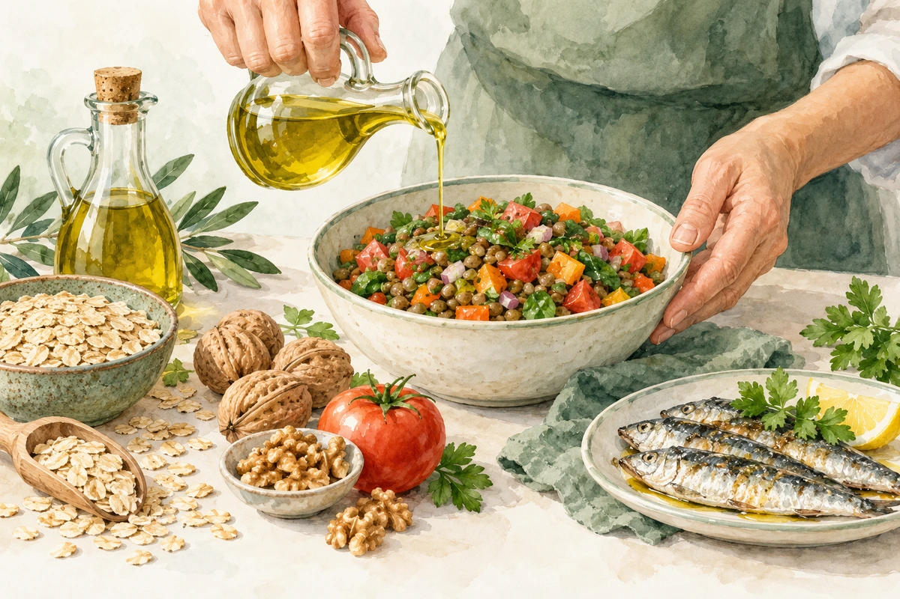
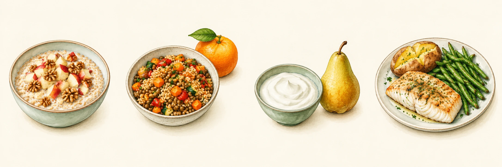

SITUACIONES ESPECIALES
Colesterol alto
Cambios útiles para cuidar tu corazón.

Lo esencial
Tener colesterol alto significa que algunas grasas de la sangre están elevadas. El LDL puede acumularse en las arterias y aumentar el riesgo de infarto o ictus. A menudo no causa síntomas. El riesgo también depende de antecedentes, tensión, tabaco y otras enfermedades.
Puede haber una causa hereditaria
Si varios familiares tienen colesterol muy alto o enfermedad cardiovascular a edad temprana, coméntalo. La alimentación ayuda, pero a veces hace falta medicación incluso con buenos hábitos. No es un fracaso personal.
Elige lo que cuida tus arterias
| Prioriza | Con moderación |
|---|---|
| Aceite de oliva; frutos secos sin sal | Mantequilla, nata, aceite de coco y productos ricos en grasa saturada. |
| Legumbres, tofu, pescado, carnes frescas | Embutidos, carnes procesadas y carnes muy grasas. |
| Avena, pan integral, verduras y fruta | Bollería, galletas y cereales muy azucarados. |
| Agua; lácteos naturales según pauta | Refrescos azucarados; quesos grasos en grandes cantidades. |
No basta con “comer sin grasa”: importa el tipo. Sustituir grasa saturada por grasas insaturadas ayuda; cambiarla por bollería o harinas refinadas no es una mejora. La fibra de avena, legumbres y fruta también es útil.
¿Se prohíben huevos o marisco?
No de forma automática. Cuenta el conjunto de tu dieta, la grasa saturada y tu pauta. Un huevo con verduras no es la misma comida que huevos con embutido y fritos.
Lo que conviene evitar
No empieces a beber alcohol para “proteger el corazón”. Evita los productos con aceites parcialmente hidrogenados si los encuentras. No sustituyas el tratamiento por levadura roja de arroz u otros suplementos sin consultar: su composición y seguridad pueden variar.
Consejos que encajan en tu día
| En lugar de… | Prueba… |
|---|---|
| Embutido cada mañana | Tomate y aceite de oliva; hummus; una proteína fresca. |
| Carne procesada en varias comidas | Un guiso de legumbres o pescado con verduras. |
| Galletas a diario | Avena con yogur natural o fruta y frutos secos. |
| Fritura habitual | Horno, plancha o guiso con aceite de oliva. |
• Cocina un guiso de lentejas o garbanzos y congela porciones. Puedes usar conservas escurridas y enjuagadas.
• Si comes fuera, elige verdura, una proteína y una guarnición sencilla. Pide salsas aparte y agua.
• Camina o practica otra actividad que puedas mantener. El tabaco aumenta mucho el riesgo cardiovascular: pide ayuda para dejarlo.
• No juzgues el resultado por cómo te sientes: el colesterol se comprueba con análisis. Acuerda cuándo repetirlos y qué objetivo corresponde a tu riesgo.
Menú semanal y fuentes
Prioriza fibra y grasas saludables. Cantidades según tu pauta. Agua y aceite de oliva; frutos secos sin sal.

Las imágenes muestran ejemplos del lunes. Sigue los alimentos de la tabla para los otros días.